Hello, I'm Sierra
Ask how your work, training and service can count as college credit.

map.rccd.edu (opens in a new tab)Sierra answers questions about credit for prior learning at California's community colleges: which colleges award credit for a license, certification, apprenticeship or military training, which colleges teach a subject, and how the process works.
Beta — Sierra is still learning. Your college's CPL coordinator makes the final call on credit, and Sierra names the coordinator to ask. Please don't enter personal information; questions are logged anonymously to improve the answers.
Ask how your work, training and service can count as college credit.